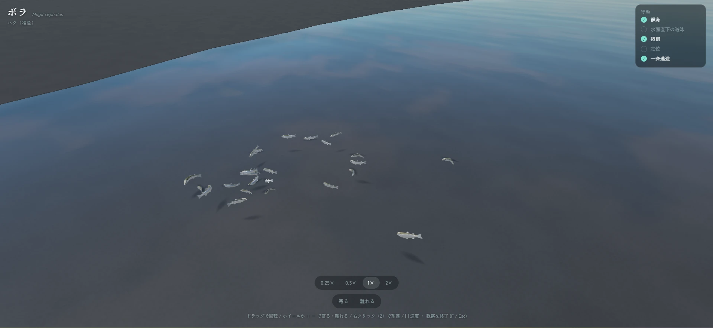

海と陸のあいだを、のぞいてみよう。開発中のゲーム画面
HIGATA ZUKAN
満ちて、引いて。また、新しい発見。
OBSERVE · COLLECT · DISCOVER01 / ABOUT THE GAME
何もないようで、
いのちでいっぱい。
砂の上を歩くカニ。水の中に隠れる小さな魚。
潮だまりをのぞくと、干潟の表情が見えてきます。
『干潟図鑑』は、生き物の観察や採集、そして水槽づくりを楽しむゲームです。見つける楽しさを、少しずつ自分のコレクションへ。
現在開発中です。掲載内容は開発に伴い変更される場合があります。
02 / YOUR OWN DISCOVERY
干潟で見つける、
3つの楽しみ。
のんびり眺める日も、
夢中で探す日も。
干潟 − 観察計画している遊び方
立ち止まると、
見えてくる。
潮だまりや砂地をのぞいて、生き物の姿や動きを観察。潮の満ち引きで変わる干潟を、ゆっくり探索します。

03 / IN-GAME VIEWS
干潟の世界を、
ひと足先に。
開発中のゲーム画面
画像を押すと大きく表示できます。
04 / DEVELOPMENT
小さな世界を、
つくっています。
2026年11月の公開に向けて開発中。
新しい情報は、このサイトでお知らせします。
タイトル干潟図鑑
ジャンル生き物観察・採集ゲーム
対応環境PCブラウザ（予定）
公開時期2026年11月予定
開発状況開発中
GOOD TO KNOW
よくある質問
今すぐ遊べますか？
2026年11月の公開を予定しています。プレイ方法や詳しい公開日は、このサイトでお知らせします。
スマートフォンでも遊べますか？
現在はPCブラウザ向けとして紹介しています。スマートフォンへの対応は未定です。
サイトの画像はゲーム画面ですか？
はい。掲載画像は開発中のゲーム画面です。公開時の表示や内容とは異なる場合があります。